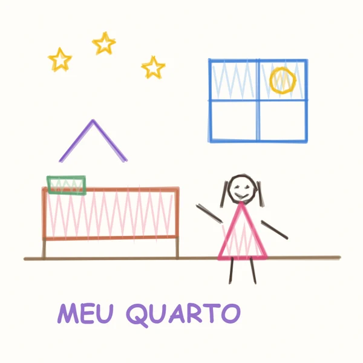

Certificado · o mini designer
Quarto da Helena
Quarto da Helena · Ela imaginou, desenhou e ajudou a escolher. Este quarto também é obra dela.

Lar Desenhadoprojetos para quartos de bebê e infantis
Lar Desenhadoprojetos para quartos de bebê e infantis
Certificado de mini designer
Helena
ajudou a imaginar, desenhar e projetar o próprio quarto, junto com a família. O desenho dela foi o ponto de partida de tudo.
Nosso apartamento
13 de outubro de 2026
13 de outubro de 2026
O desenho da Helena

"Meu quarto", o quarto que ela imaginou no primeiro dia.
QuartoQuarto da Helena
CasaNosso apartamento
AssuntoCertificado
Data13/10/2026
∩ ❦ ♥★